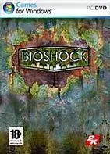
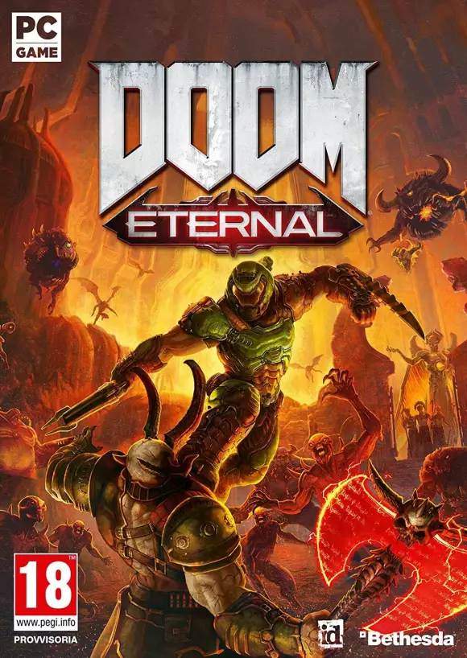
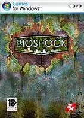
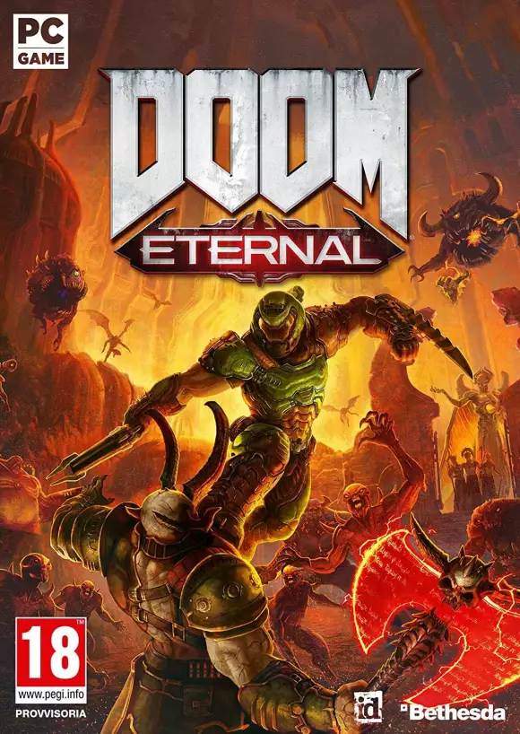

Los videojuegos y su gran importancia
Los videojuegos tienen una gran importancia en la sociedad actual, es una manera de hacer amigos, que es una de las cosas mas importantes para un niño o adolescente, ya que estos hoy en día ya no quieren salir tan frecuentemente a dar una vuelta o jugar futbol, sino que se reúnen para jugar videojuegos. Por esto, se puede dar el caso que un niño no juegue a la consola, le cueste hacer amigos y para empezar a introducirse en el mundo de los videojuegos solamente para poder entrar en un círculo social, además cuenta con gran importancia ya que tras los videojuegos pueden influir psicológicamente en las personas de varias formas.
Lo mas jugado

 


